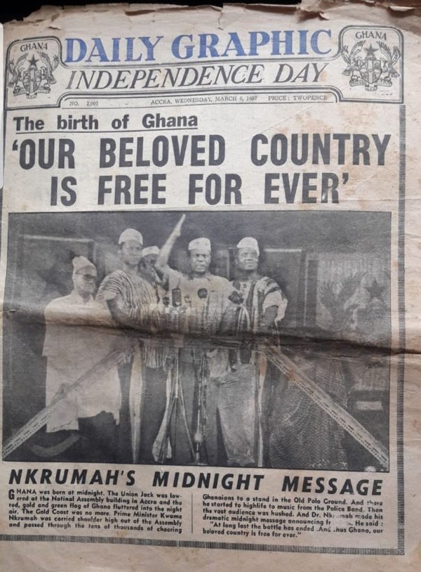
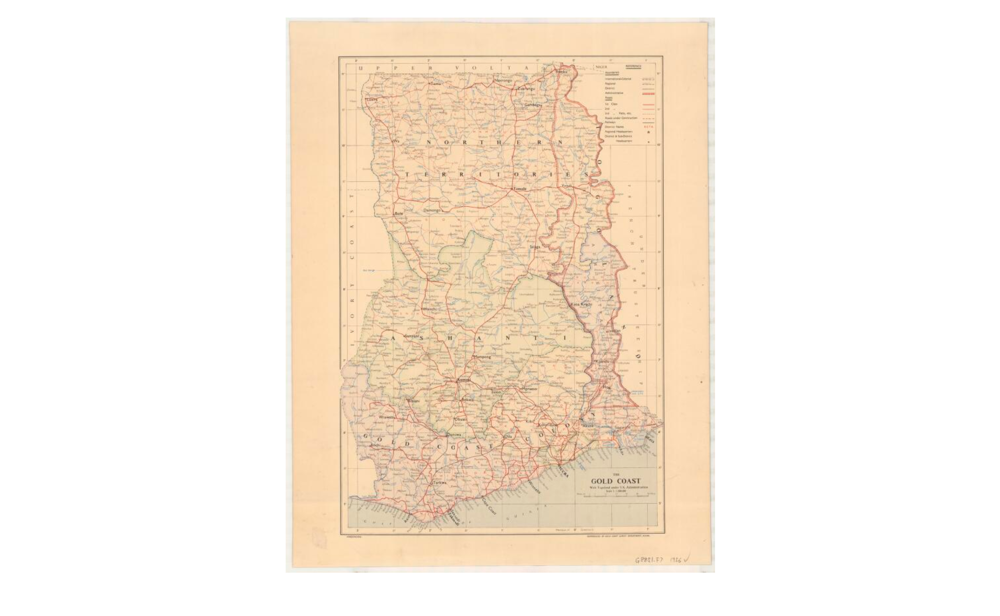

Archival Photographs
Explore historical photographs capturing Ghana's independence celebrations, speeches, ceremonies, and memorable moments from 1957.
Explore Photographs →Explore the story of Ghana's independence through a carefully curated collection of photographs, government documents, newspapers, speeches, books, maps, and audiovisual resources from trusted archives, libraries, museums, and research institutions.
Follow the events leading to 6 March 1957, discover the people who shaped the new nation, and explore the documents and images that captured one of the most significant moments in Ghana's history.
This curated collection brings together archival photographs, official documents, newspapers, books, maps, speeches, and audiovisual materials that document Ghana's transition from the Gold Coast to an independent nation in 1957.
Browse carefully selected historical resources documenting Ghana's independence, including photographs, official records, newspapers, publications, maps, and audiovisual materials.
Explore historical photographs capturing Ghana's independence celebrations, speeches, ceremonies, and memorable moments from 1957.
Explore Photographs →
Explore historical books, publications, and scholarly works documenting Ghana's journey to independence and the events surrounding 1957.
Explore Books and Publications →
Discover official records, constitutional documents, government reports, and correspondence relating to Ghana's transition to independence in 1957.
Explore Government Documents →
Explore historical newspaper reports, headlines, and articles documenting Ghana's independence and the events surrounding 6 March 1957.
Explore Newspapers →
Explore historical maps showing the Gold Coast's boundaries, administrative divisions, and geographical transformation into independent Ghana.
Explore Maps →
Discover historical speeches, recordings, documentaries, and video footage documenting Ghana's independence and the events of 1957.
Explore Audio & Video →